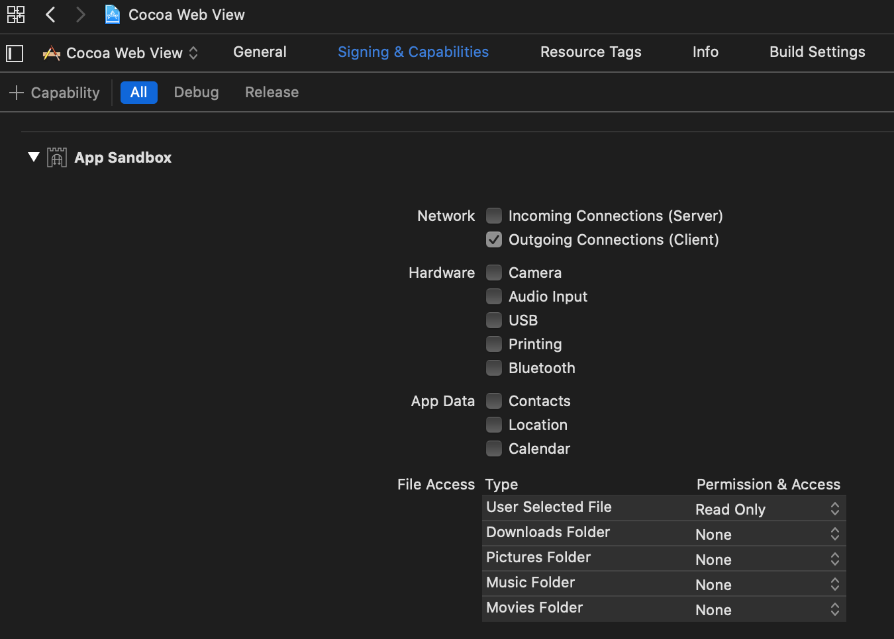

Cocoa - Web View
This post is part of Cocoa UI examples series. It covers implementation of simple web browser using WKWebView.
Example is built on macOS Catalina and Xcode 11.3.
GitHub | Repository name
Enabling outgoing connections
In order to use web view it is neccessary to enable Outgoing connections (Client) in Signing & Capabilities
tab of project settings

Add controls
In the Interface Builder add Web View, four buttons and a text field.
It should look like this in the end.

AppDelegate
Add outlet for controls that were added in MainWindow.xib. Add functions for handling home page, go to page that is
written in text field if it is a valid url, go back and go forward.
#import
#import "AppDelegate.h"
@implementation AppDelegate
- (void)awakeFromNib
{
[self homePage:self];
}
#pragma mark Action methods
- (IBAction)homePage:(id)sender
{
[self loadPage:@"https://www.google.com"];
}
- (IBAction)goToPage:(id)sender
{
NSString * url = [NSString stringWithFormat:@"%@%@", @"https://", [_adressTextField stringValue]];
if (![self validateUrl:url])
{
return;
}
[self loadPage:url];
}
- (IBAction)goBackPage:(id)sender
{
if (![_webView canGoBack])
{
return;
}
[_webView goBack];
}
- (IBAction)goForwardPage:(id)sender
{
if (![_webView canGoForward])
{
return;
}
[_webView goForward];
}
#pragma mark Helper methods
- (BOOL)validateUrl:(NSString*)url;
{
NSString *urlRegEx = @"(http|https)://((\\w)*|([0-9]*)|([-|_])*)+([\\.|/]((\\w)*|([0-9]*)|([-|_])*))+";
NSPredicate *urlTest = [NSPredicate predicateWithFormat:@"SELF MATCHES %@", urlRegEx];
return [urlTest evaluateWithObject:url];
}
- (void)loadPage:(NSString*)url
{
[_webView loadRequest:[NSURLRequest requestWithURL:[NSURL URLWithString:url]]];
}
@end